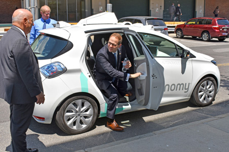
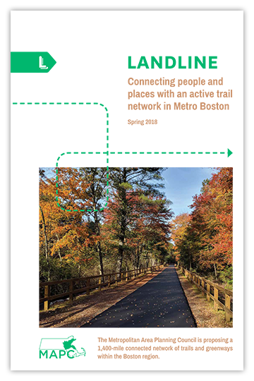
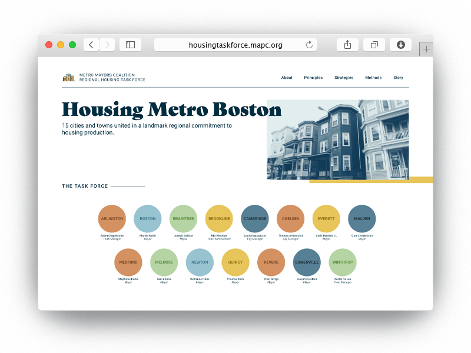

What a time to be working in policy and planning in Greater Boston! The economy is humming, new development sprouts at every corner, and our creative, competitive workforce is busy developing the next set of innovations that will change the way we relate, converse, commute and create. We have much to be proud of, and much to plan for.
Yet challenges abound, making the hard work of planning deliberately for the future all the more essential and relevant. Our housing affordability remains unresolved. Our economy, though robust, leaves many behind, and entrenched patterns of segregation, disinvestment and displacement make it difficult for many of the region’s most vulnerable residents to get ahead. The threat of climate change looms large, and our transportation system groans under the weight of decades of deferred maintenance.
A region bursting with both talent and troubles is ripe for critical minds to apply analysis, modeling, and broad community engagement to the hunt for equitable, collaborative solutions. This is just what we hope to do with our forthcoming long-range regional plan, “Metro Common 2050: Shaping a Better Region Together.” In what promises to be a challenging and rewarding two years, we hope to reach the vast diversity of people living, working, and raising families in Metro Boston to get ideas about what our future should look like—and specific steps we can take to reach that vision.
To succeed, this work must include you! Want to get more involved with Metro Common right away? Sign up for the latest updates at metrocommon.mapc.org, or visit our agency website to experience the full breadth of our work, at mapc.org.
What’s in a name? Well, when it comes to Metro Common 2050, each component is meaningful. It’s called “Metro” because this is a metropolitan plan, envisioning a future for everyone in the metro region, not just any one town or neighborhood. “Common” indicates a search for shared solutions to common problems, and 2050 is the “out year,” or our plan’s horizon, and we are trying to envision what we’d like the region to be like in that timeline—with concrete steps to get us there.
We all have a lot in common, we all want to thrive, and we all want to be happy and healthy. There are many challenges: traffic congestion, a changing climate, the increasing cost of housing equity and health, the need to protect our communities, jobs and the economy, making sure local government works, and helping municipal neighbors to work together. We can’t do it without your help! Read on to see what we’ve been up to this year, and then put on your thinking cap to let us know what YOU see as the future.
MAPC, the regional planning agency for Greater Boston, helps build equity, opportunity, and livable, vibrant places for more than 3.5 million residents living and working in 101 cities and towns across Eastern Massachusetts. Guided by our regional plan, MetroFuture, and in concert with our own strategic goals, we strive to be a nimble and innovative public agency that provides core planning support to our member communities while also staying abreast of new trends in housing, transportation, public health, safety, clean energy, preservation, economic development, creative placemaking and more.
This year, we continued to build on our growing practice area around emerging technological innovation in transportation, while always providing core support services to our region around walkability, bike sharing and cycling infrastructure, trail planning, parking policy, complete streets, transportation demand management, regional transportation planning, sustainability, data, research, and more.
In June, MAPC, MassDOT, DCR and 14 mayors from our Metro Mayors Coalition hosted a special event in the Seaport to announce a regional agreement to facilitate and expand autonomous vehicle testing in Massachusetts. We were joined by Governor Charlie Baker and Transportation Secretary Stephanie Pollack for this first-in-the-nation regional approach to planning for self-driving cars. The MOU establishes a common course for companies looking to test their self-driving vehicles in Massachusetts. With a single application, companies will be able to work with multiple communities to test their technologies in a range of environments, neighborhoods, and road types. In order to be eligible, companies need to have a human driver inside the vehicle at all times, demonstrate that their vehicle has passed a Registry of Motor Vehicles inspection, and prove that the car can be operated “without undue risk to public safety.”
MAPC worked to help convene the many municipalities who signed onto the MOU, working with local staff, mayors, and city and town managers to help build a regional consensus on testing.
After the signing, the mayors and attendees enjoyed an exhibition of several models of autonomous vehicle currently being tested in the area. The event was just one piece of our multi-faceted approach to helping the region plan for the advent of AV technology in Greater Boston. To read more about this work, visit our blog.
Joseph A. Curtatone Mayor of Somerville
In February, MAPC released the report “Fare Choices: A Survey of Ride-Hailing Passengers in Metro Boston, which gave unique insight into the characteristics of residents and visitors to the region who use ride-hailing services such as Uber and Lyft. This study, the first in the country to survey actual passengers inside their ride share vehicles, asked more than 1,000 riders about their trip—destination, frequency, cost, type of transportation mode replaced—and compiled it into usable data that showed some clear patterns. For example, we found that most survey respondents were young, non-car-owners, and used ride-hailing on a weekly basis. We also found that the type of trip it replaced was very likely to be a transit ride—at 42% of survey respondents—and we estimate that 15% of all ride hailing trips are adding cars to the region’s roads during rush hours. This affects not only traffic but MBTA revenue, since each ride hailing trip represents 35 cents in lost fares to the MBTA—far exceeding the 20-cent-per-ride surcharge fee on ride-hailing assessed by the state. The study, which gained widespread coverage nationwide, demonstrates that ride hailing is a valuable option for many residents but one with negative effects that planners will need to carefully prepare for and plan around.
Read the full report at mapc.org/farechoices.
MAPC has also begun organizing a coalition of commuter rail communities this year, in partnership with Transportation for Massachusetts (T4MA) and the MetroWest/495 Partnership. The goal of the group is to bring together officials from 25 communities where commuter rail runs to talk about ways to improve service, advocate for a system that meets the region’s needs, and add a focus on climate resiliency and sustainability to the network. The coalition will continue meeting in 2019 so stay tuned for more information on their important work.
Learn more about our work in transportation planning at mapc.org/transportation
In December of 2017, Boston and the MBTA piloted an exclusive bus lane on Washington Street between Roslindale Square and Forest Hills, building on the success of a 2017 pilot project that utilized dedicated bus lanes on Broadway in Everett to alleviate traffic and speed up bus times. Both projects used an MAPC parking analysis to convert car spaces into a devoted bus lane. The Everett and Roslindale projects were so popular with commuters across all modes that the model became permanent in 2018! MAPC has now begun working on two new pilots in Arlington and Cambridge/Watertown to test the use of dedicated bus lanes on Massachusetts Avenue and Mount Auburn Street, two extremely busy corridors, with the dual goals of alleviating traffic and encouraging more drivers to choose cycling or riding the (faster, more reliable) bus for getting around at rush hour.
This year, MAPC has also helped more than a dozen communities near Boston to launch no-cost, dockless bike share service. Several cities in our Inner Core, including Chelsea, Malden and Revere, underwent pilot programs to try these dock-free bike share systems in the fall of 2017; in spring of 2018, a regional program procured by MAPC rolled out across Greater Boston, giving more people in more communities access to low-cost bicycling opportunities. Dockless bike share systems offer bicycles with self-locking mechanisms that unlock with a mobile app. Rather than relying on docking stations, these bikes can be parked on the sidewalk, at bike racks, or in almost any publicly-accessible place, where the next user can pick it up, typically paying about one dollar per ride. MAPC’s effort helped to create a boundary-less, regional system that local governments could join at low or no cost, even offering e-bikes for greater ease of riding for inexperienced cyclists or riding on hilly terrain. Next, MAPC will be working with a small cluster of communities to develop model language for permitting of electric scooters, the next big thing to emerge in the field of mobility.
In late 2018, the Baker-Polito administration officially announced an exciting new program: MassTrails, which will provide funding and resources to expand and connect recreational trails and shared-use paths in Massachusetts. In addition to distributing about $5 million in matching grants in Fiscal Year 2020, MassTrails will offer technical assistance and resources to help design, construct, and maintain the Commonwealth's high-quality trails. Some of these resources are already available, including a shared-use path planning and design guide and a cost estimator tool.
MAPC has worked collaboratively with the MassTrails team to advocate for increased attention to trails in the Commonwealth and communicate our priorities for funding.
The MassTrails program is particularly exciting for its potential to help realize MAPC's LandLine vision plan. Earlier this year, MAPC released a visionary plan to connect 1,400 miles of greenways and trails into a seamless network. The LandLine would include consistent and clear signage throughout the network and bring trail access within a mile of where 92 percent of the region's residents live.
MassTrails places particular emphasis on expanding and connecting existing trails—exactly what LandLine is trying to achieve. Read more about LandLine here.
In late 2018, MAPC announced the launch of our Accelerating Climate Resiliency Mini Grant Program. Generously funded by the Barr Foundation, the $15,000 to $50,000 grants will advance strategies protecting people, places, and communities from the impact of climate change. The goal of the program is to fund smaller, low-cost projects, policies, and actions that will contribute to long-term resilience to climate change. While addressing the potential impact of climate change is daunting, MAPC hopes that the funded projects can begin to increase local preparedness.
Climate change is upon us and Metro Boston is already experiencing extreme weather-record-breaking snowfall in 2015, the worst drought in MA since the 1960s in 2016, the warmest year on record in 2017, and four Nor’easters in one month in 2018 (one similar to the Blizzard of ’78 in terms of coastal flooding). MAPC recognizes the urgency in building community resilience today and seeks to leverage climate planning efforts into projects that enable communities to thrive in our time of climate change. These grants are a way to turn planning into implementation.
Learn more at mapc.org/resource-library/accelerating-resiliency.
For much of 2018, MAPC administered a Massachusetts Department of Energy Resources (DOER) grant program to help cities and towns across the state retrofit their streetlights to LEDs and save significant amounts of energy and money. A lesser-known aspect of this project is that all new streetlights being installed are “control-ready.” A control-ready streetlight has the internal wiring necessary to pair with smart control devices—such as emergency signal lights—which can be remotely controlled via a web-based system.
More common applications of these wireless control systems include setting regular schedules on lights, allowing them to brighten or dim at specified times of day. Control systems also provide the benefit of real-time maintenance information, such as whether a light is out or turned on during the wrong time of day. This allows for better-informed light maintenance, allowing the city or town to track things in a systematic, orderly way instead of waiting for resident complaints about lights, or losing money and time driving around to check the lights for outages.
In tomorrow’s world, the new communications network enabled by these wireless controls could potentially enable numerous innovative “smart-city” applications. Other devices compatible with the systems could include motion sensors to monitor traffic, temperature sensors to inform winter weather planning, like salting on roadways, integration with water meters, trash pickup, and more.
To learn more about adding smart controls to your city’s LED streetlights, or for information about retrofits, visit mapc.org/our-work/expertise/clean-energy/led-streetlight-retrofits.
Data Sources: MAPC, Massachusetts Department of Energy Resources
The Metro Boston DataCommon, an open data resource that MAPC first launched in 2006, returned better than ever in 2018 after an extensive user-focused restructuring and redesign.
The DataCommon provides a trove of information about a wide array of topics—a resource for everyone seeking to understand their communities. It can help anyone—residents, stakeholders, planners, city and town officials, educators, journalists—explore data and make informed decisions.
In 2006, MAPC launched the very first version of our DataCommon in collaboration with the Boston Indicators Project at the Boston Foundation. Since then, it’s gone through multiple iterations and updates. Most recently, the MetroBoston DataCommon allowed users to explore data, look at community snapshots, and create their own charts and maps.
This year, the MAPC Digital Services team took on the task rebuilding the DataCommon. The new, simplified browser makes it easy to grab a quick fact about any city or town in Massachusetts or to dig deep into any of the data. What most users won’t see right away is the ‘back end’ work that connects the Data Common directly to MAPC’s in-house database, so that as new data is added, it’s available to external users with no delay or extra processing needed.
Visit the new DataCommon at datacommon.mapc.org and send feedback or ideas to datacommon@mapc.org.
Massachusetts has some of the oldest gas mains in the nation, with pipes averaging 60 years old. To replace this underground infrastructure, utilities must navigate a patchwork of paper permits to dig up roads across the state, and their plans aren’t necessarily coordinated with local DPWs who pave and repair local roads. Fixing streets is necessary but expensive work, making it wasteful to dig them up twice by utilities and public works staff. MAPC wondered: what if utilities and DPWs could coordinate better? There are millions of dollars in potential savings if roads are torn up and repaved less often, as it costs about $1 million per mile to replace gas mains.
The MAPC Digital Services team worked Ayer, Milton, North Reading, and Westborough to develop an online system to help coordinate infrastructure improvement plans. The project resulted in two separate parts: a common online permitting system for street openings, which reduces towns’ and gas companies’ administrative and time costs; and Roadworks, an online infrastructure coordination mapping tool that helps municipalities identify where permit requests overlap with planned gas line repairs and other projects.
The result? A streamlined digital platform for the four towns to manage, track, and standardize street openings. It helps public works departments coordinate internally across highway, water, and sewer divisions and externally, with gas companies, other utility providers, and local contractors.
The first phase of this project was funded by a Commonwealth Efficiency and Regionalization Grant. If you’d like to learn more and see if your town could participate in the next phase of Roadworks, contact the MAPC Digital Services team at digitalservices@mapc.org.
Our two-year-old Arts & Culture Division has grown by leaps and bounds, always staying at the forefront of creative placemaking, arts and culture planning, equity, and education, with a focus on helping and working with local officials while engaging local residents in the region in new ways.
This fall, staff from the Arts & Culture team led a cross-departmental, collaborative effort to kick off our Metro Common regional planning process with an installation at Hubweek on Boston’s City Hall Plaza. Utilizing a shipping container and interactive materials, the event invited visitors to consider the region’s history of segregation and patterns of housing disparity, as a way of forging new conversations on race, equity and land use as we plan for the future. The installation made use of informational flip boards and an illuminated data viewing table, both of which will be viewable at various points during the Metro Common planning process in 2019 and 2020. Data Services and Housing staff contributed to the effort, outlined in more detail on our blog at mapc.org/planning101/shipping-container-to-interactive-exhibit-housing-at-hubweek.
Over the summer, MAPC staff attended Rockland Day to help raise money and support for the town’s creative placemaking project, Sole of Rockland. Sole of Rockland is an interactive, creative downtown revitalization effort. MAPC engaged Rockland Day attendees through a community art station in the REiMAGINE ROCKLAND tent. The art station invited visitors to make watercolor paintings of their shoe soles to kickstart conversation about the project. The activity engaged everyone! The end result was a wide array of beautiful, shoe-themed artworks, displayed at the tent on a clothesline. At the same time, project team members led a discussion based activity to capture stories and memories of special places and hidden gems of downtown Rockland, through the use of notecards and a custom-designed map. The stories were used to create a new creative map of downtown Rockland that allowed MAPC to identify sites and locate sidewalk art while incorporating the shoeprints made by Rockland residents from the day’s event into the map.
In November, Natick saw an infusion of creative projects installed in three locations downtown thanks to a partnership with MAPC, including a musical bridge, a colorful hopscotch board, and new wayfinding decals designed to look like stained glass. The town was brought to life in a new way through "For the Love of Natick: A Creative Placemaking Weekend,” the culminating event in a year-long creative placemaking process. Over a dozen artists were commissioned to contribute site-specific artwork throughout the town's center that embodied the values of the project: accessibility, engagement, boldness, respect, historical relevance and forward-thinking, and wayfinding. The art pieces and performances were selected and funded by the Town of Natick, MAPC, and the Natick Center Cultural District as part of a larger project to develop a creative placemaking strategy for Natick Center. “Creative placemaking” is a process that uses arts and culture to enhance community identity, improve social and cultural cohesion, and address challenges in a specific area. Developing a strategy for creative placemaking in Natick Center has involved engaging a diverse array of stakeholders in the town to identify improvements they wanted to see in their town center. The project will gather information about the area’s arts and cultural assets and include recommendations for new processes, tools, and strategies to encourage creative engagement.
Read more about the project on our blog. Read more about the arts and culture team’s ongoing work online at mapc.org/our-work/expertise/arts-and-culture.
Good food and good health go hand in hand. With a good food system comes environmental sustainability, social cohesion, and civic engagement. Technical assistance around our food system is a key component of our suite of planning services in the areas of public health, land use, culture and beyond. Though challenges abound, partnerships around food and planning can be fruitful places to make meaningful change in the lives of our region’s most vulnerable and underrepresented groups.
Like many urban areas, the city of Everett faces challenges to providing equitable access to healthy, culturally appropriate foods. Recent demographic shifts and rapid development have posed their own challenges to the local food system, which is why MAPC, working with the city and Everett Community Growers, recently completed the Everett Community Food Assessment and Plan.
Residents, food business owners, and other stakeholders worked over the course of a year to figure out what’s working and what’s not in Everett’s food system, learning in particular about school food, food businesses and their workers, community gardeners and urban agriculture, and food security. MAPC acted as the co-author and planning technical assistance provider for the plan,
digging in on research, organizing meetings and events, collecting and making sense of data, and developing project materials. A variety of stakeholders weighed in on their experiences through surveys, focus groups, and even photography. Local photographer Katy Rogers invited residents to view their City as community photojournalists and take pictures that told the story of Everett’s food system. These photos and stories were exhibited over the summer on the Northern Strand Community Trail, at “Everett Earthworks,” the site of a newly installed public art installation and garden by MAPC artist-in-residence Carolyn Lewenberg.
In one of the most diverse cities in the Commonwealth, project partners worked to ensure that the changes called for in the food plan would celebrate Everett’s many cultures and promote health equity and racial equity. As a result, the plan emphasizes inclusive decision making, multilingual outreach, and improving conditions for those most negatively impacted in the food system.
Read more about this effort on our blog at mapc.org/planning101/mapc-helps-city-of-everett-community-partners-launch-first-ever-food-plan.
Everett Earthworks
The state’s Executive Office of Public Safety will continue engaging MAPC as fiduciary agent for the Homeland Security Program in Massachusetts, giving us oversight of the state’s central, northeast, southeast and western Homeland Security regions. We provide management, administrative, and planning support to these four regions and their local advisory councils. We also work with our counterpart regional planning agencies (or RPAs) in those areas, including the Central Massachusetts Regional Planning Commission, Southeastern Regional Planning and Economic Development District, and the Franklin Regional Council of Governments. We look forward to continuing our work with EOPSS and the Homeland Security Regions to enhance emergency preparedness capabilities at the state, regional, and local levels.
Our municipal collaboration team also works to secure cost savings for public works, police, and fire departments across Eastern Massachusetts through our collective purchasing program, and we continue to work with law enforcement and prevention partners in eight Inner Core communities—Cambridge, Chelsea, Everett, Malden, Revere, Quincy, Somerville and Winthrop—to manage the Shannon Community Safety Initiative, a grant program designed to address youth and gang violence. We are honored to continue facilitating this program in tandem with our community partners and believe it has a very real impact on at-risk youth and crime prevention.
This year, our procurement services staff led 20 school food directors from Acton-Boxborough, Littleton, Ashland, Canton, Milton, Needham, Webster and Hopkinton on a tour of seafood vendors who are on contract with MAPC to provide healthy, locally-caught seafood to schools across Eastern and Central Massachusetts. This contract aims to support local fishermen who catch underutilized fish species, while diversifying the menu at local schools and helping more kids enjoy eating fish as part of lunchtime nutrition. More sessions are planned with additional school directors in the spring.
Our Municipal Collaboration team also works inter-departmentally, collaborating with Clean Energy and Transportation to develop an approach to group purchasing that filled gaps in the Massachusetts clean vehicle landscape this year.
Adding electric, hybrid, and other alternative fuel vehicles to municipal fleets reduces carbon emissions while cutting spending on gasoline and diesel fuels—but the benefits and potential of these technologies aren’t widely known. Municipal fleet managers and departments of public works are wary about buying battery electric or hybrid electric vehicles for their fleets without examples of cost savings, operations, and maintenance benefits. That’s where MAPC and the Fleets for the Future Initiative have been trying to fill the gap.
In the spring of 2016, the Department of Energy selected MAPC as one of a handful of organizations nationwide to pilot a program helping fleets across our region procure fuel-efficient vehicles and related technology. Led by the National Association of Regional Councils (NARC), MAPC and four other regional councils, nine Clean Cities Coalitions, and five technical partners launched what would become Fleets for the Future.
The MAPC team set out to make it easier for municipalities and state agencies to integrate clean vehicle technology into their fleets, while saving money by buying together at a discounted cost. Click here to learn more about our Clean Vehicle Projects and Green Mobility Group Purchasing Program.
On the government affairs front, our team worked intensively throughout the year on numerous legislative priorities, ranging in topic from affordable housing and zoning reform to driverless cars, regional ballot initiatives, short-term rentals, opioid investments, regionalization grants and more.
In early October, the Metro Mayors Coalition announced a goal of creating 185,000 new housing units between 2015 and 2030. This region-wide housing goal was among the first of its kind in the nation, and received a significant amount of press coverage. It represented a collaborative, months-long effort among staff from Government Affairs, Communications, Housing, and the Data Services Digital group, which build a highly informative website for the project at housingtaskforce.mapc.org.
This landmark regional housing commitment includes a regional production goal, with a set of 10 principles and best practices to guide the commitment toward meaningful action. Work toward setting a regional goal began last year when these Metro Mayors Coalition communities banded together to establish a Task Force to address the region’s worsening housing crisis. Since 2010, the 15 cities and towns of the Metro Mayors Coalition have added nearly 110,000 residents and 148,000 new jobs, while permitting only 32,500 new housing units. Intense competition for the limited available housing drives up prices, makes it difficult for people to find homes they can afford, and increases the potential for displacement. MAPC projects that Eastern Massachusetts will need 435,000 units of housing by 2040 to meet demand.
Marc Draisen Executive Director of the Metropolitan Area Planning Council (MAPC) in Boston
To help visualize development from both a regional perspective and a local perspective, MAPC also created MassBuilds, a visual database of development in the Greater Boston region, this year. It’s fast becoming one of the most comprehensive databases of past, present, and future development in the area, and as it grows, it will only become more valuable. The site relies on users—that’s right, the public—to tell us about proposed development or new construction that we missed. All of these data points will affect decisions made by MAPC, the state, and maybe even your town. Click here to make sure your community is represented accurately: massbuilds.com.
In early 2018, MAPC took the next step to promoting a more equitable region with the release of a draft State of Equity in Metro Boston Policy Agenda. We hope that the plan serves as a tool to advance policy change in the Boston region and that it serves as a roadmap not only for MAPC, but for our coalition partners, legislators, state and municipal officials, policy experts, and anyone looking to reduce and eliminate inequities our region.
As an organization, MAPC has specifically tracked equity indicators since 2011, when we released the first State of Equity for Metro Boston Indicators report. The indicators track inequalities across sectors including housing, transportation, public health, and contaminated environments. We updated that report last year in the State of Equity 2017 Update, which delved into the data to show where the Metro Boston region had improved in five years—and where work was still needed. This 2018 report outlines policy goals and features a digital web component, equityagenda.mapc.org, that features stunning visuals and interactive maps using MAPC’s equity data to show disparities in the region, and information on each of MAPC’s overarching policy goals. View photos from the standing-room-only State House event where the report was unveiled here.
Inner Core Committee
The ICC consists of representatives from twenty-one of the metropolitan area’s innermost communities: Arlington, Belmont, Boston, Brookline, Cambridge, Chelsea, Everett, Lynn, Malden, Medford, Melrose, Milton,* Needham, Newton, Quincy, Revere, Saugus, Somerville, Waltham, Watertown and Winthrop. The Boston Redevelopment Authority and the Metropolitan Area Planning Council are also voting members of the Committee.
MetroWest Regional Collaborative
The MetroWest Regional Collaborative (MWRC) serves the MetroWest region of Eastern Cochituate Aqueducts, Natick, Mass.Massachusetts, from I-95 to I-495 along the Route 9 corridor. MWRC serves as a think tank and advocate for locally initiated regional solutions to policy and planning challenges shared by MetroWest communities.
Minuteman Advisory Group on Interlocal Coordination
Minuteman Advisory Group on Interlocal Coordination (MAGIC) is a group of thirteen communities northwest of Boston working collaboratively on issues of regional concern. Established as a growth management committee in 1984, it has become a respected voice in regional decision-making. MAGIC consists of representatives from the following thirteen communities: Acton, Bedford, Bolton, Boxborough, Carlisle, Concord, Hudson, Lexington, Lincoln, Littleton, Maynard, Stow, and Sudbury.
North Shore Task Force
The North Shore Task Force (NSTF) is a group of 16 communities north of Boston working collaboratively on regional issues. The goal of NSTF is to cooperate with, and to assist, each member municipality in coordinating its planning and economic development so as to obtain maximum benefits for the North Shore district. NSTF communities include Beverly,Danvers,Essex, Gloucester, Hamilton, Ipswich, Manchester-by-the-Sea, Marblehead, Middleton, Nahant, Peabody, Rockport, Salem, Swampscott, Topsfield, and Wenham.
North Suburban Planning Council
The North Suburban Planning Council (NSPC) is composed of eight towns and one city that have formed a voluntary association to facilitate cooperative regional planning. NSPC membership includes town managers and administrators, planning staff, and members of Planning Boards and Boards of Selectmen from the following nine communities: Burlington, Lynnfield, North Reading, Reading, Stoneham, Wakefield, Wilmington, Winchester, and Woburn.
South Shore Coalition
The South Shore Coalition subregion comprises 13 towns on the South Shore within the metropolitan Boston area. The towns are Braintree, Cohasset, Duxbury, Hanover, Hingham, Holbrook, Hull, Marshfield, Norwell, Pembroke, Rockland, Scituate and Weymouth. The South Shore Coalition (SCC) consists of member positions, one for each of the 13 municipalities.
SouthWest Advisory Planning Committee
The SouthWest Advisory Planning Committee (SWAP) is comprised of up to twenty members representing ten communities southwest of Boston. The purpose of SWAP is to foster joint and cooperative action concerning transportation, land use, economic development, housing, historic preservation, water resources and the environment. Informed and active cooperation among neighboring communities helps to serve the needs of residents, businesses, commuters and local governments. SWAP's membership consists of the following towns: Bellingham, Dover, Franklin, Hopkinton, Medway, Milford, Millis, Norfolk, Sherborn and Wrentham.
Three Rivers Interlocal Council
The Three Rivers Interlocal Council is composed of thirteen communities south of Boston: Canton, Dedham, Dover, Foxborough, Medfield, Milton, Needham, Norwood, Randolph, Sharon, Stoughton, Walpole and Westwood. Three Rivers takes its name from the three major rivers in the sub-region: the Neponset, Charles, and Canoe Rivers.
HISTORIC PRESERVATION
New proposal could help convert older homes into apartments, avoid demolition
TRANSPORTATION
Uber, Lyft pulling commuters off transit and putting them in traffic, study says
CLIMATE CHANGE
Rising seas could mean 62,000 Mass. homes will face chronic flooding by 2060
TRANSIT
With millionaires tax off the ballot, how else do we pay for transportation and education?
Grants & Contracts
$6,692,176
Municipal Assessments
$1,469,019
Foundation Grants & Contracts
$1,827,496
Charges for Services
$1,453,540
Total Operating Revenues
$11,442,231
Interest Revenue
$4,427
Direct Labor
$3,105,990
Project Expenses (including project-specific expenses and pass-through*)
$4,503,283
Total Direct Expenses
$7,609,273
Indirect Expenses
$4,051,928
Income (loss) before transfers and other income
$(214,543)
Transfers In (Out)
$282,100
Operating Transfers Out
$(0)
Total Transfers In (Out)
$282,100
Sources of Operating Funds (total revenue excluding pass-through*)
Sources of Operating Funds (total revenue including pass-through*)
Use of Operating Funds